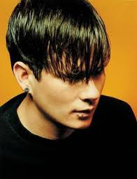
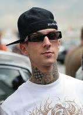

Blink182 dibentuk oleh Tom DeLonge (vokal dan gitar) dan Mark Hoppus (vokal dan bass). Setelah itu masuklah Scott Raynor sebagai drummer. Blink-182 sebelumnya dinamakan Blink, tetapi sudah ada grup musik beraliran pop asa lIrlandia yang bernama Blink. Mereka pun menambahkan angka 182, yang diambil dari judul film Turk! 182. Pada tahun 1998, Scott keluar dari Blink-182 dan digantikan oleh Travis Barker.
 Tom Delonge (lahir 13 Desember 1975; umur 34 tahun ) adalah seorang musisi yang berasal dari Amerika Serikat dan juga seorang gitaris/vokalis untuk grup musik Blink-182 selama tahun 1992-2005.Setelah keluar dari Blink-182, ia membentuk grup musik Angels & Airwaves bersama mantan anggota Hazen Street, 30 Seconds To Mars, The Offspring dan Rocket From the Crypt.Tom adalah anak kedua dari tiga bersaudara. Kakak tirinya bernama Shon Kitchen dan adiknya bernama Kari. Ibunya bernama Connie.Tom dibesarkan oleh kedua orangtuanya di Poway, California.
 Markus Hoppus (lahir di Ridgecrest, California, 15 Maret 1972;
umur 38 tahun) adalah musisi Amerika yang membentuk band beraliran punk rock, Blink-182,
dan band beraliran rock alternatif, +44. Dia bermain bass di kedua band tersebut.Ketika
Mark berumur 15 tahun, ia mendapatkan bass pertamanya sebagai hadiah ulang tahun dari
ayahnya. Mark belajar bass dengan cara otodidak. Pada bulan Agustus 1992, adik Mark yang
bernama Anne memperkenalkannya pada Tom DeLonge. Pada tahun 1992, Mark dan Tom bertemu
dengan Scott Raynor. Lalu mereka bertiga sepakat untuk membuat grup musik yang dinamakan
Blink-182. Pada tahun 1996, Scott Raynor terkena penyakit yang disebabkan oleh minuman
keras. Scott harus keluar dari Blink-182 untuk menjalani rehabilitasi. Scott keluar pada
tahun 1997 setelah Blink-182 merilis album Dude Ranch.
Markus Hoppus (lahir di Ridgecrest, California, 15 Maret 1972;
umur 38 tahun) adalah musisi Amerika yang membentuk band beraliran punk rock, Blink-182,
dan band beraliran rock alternatif, +44. Dia bermain bass di kedua band tersebut.Ketika
Mark berumur 15 tahun, ia mendapatkan bass pertamanya sebagai hadiah ulang tahun dari
ayahnya. Mark belajar bass dengan cara otodidak. Pada bulan Agustus 1992, adik Mark yang
bernama Anne memperkenalkannya pada Tom DeLonge. Pada tahun 1992, Mark dan Tom bertemu
dengan Scott Raynor. Lalu mereka bertiga sepakat untuk membuat grup musik yang dinamakan
Blink-182. Pada tahun 1996, Scott Raynor terkena penyakit yang disebabkan oleh minuman
keras. Scott harus keluar dari Blink-182 untuk menjalani rehabilitasi. Scott keluar pada
tahun 1997 setelah Blink-182 merilis album Dude Ranch.
 Travis Barker (lahir 14 November 1975; umur 34 tahun) adalah pemain drum asal Amerika Serikat. Namanya terkenal setelah menjadi pemain drum untuk grup Pop-Punk Blink 182, tapi sekarang dia bermain untuk +44. Barker juga bermain untuk beberapa grup musik seperti Box Car Racer, The Transplants, Expensive Taste, The Suicide Machines, dan The Aquabats. Di seluruh badan Travis dipenuhi tato. Pertama kali Travis membuat tato ketika berusia umur 17 tahun. Tato tersebut bertuliskan "BONES" yang tak lain adalah namanya waktu kecil. Travis sudah menikah dua kali. Travis menikah dengan Melissa Kenedy pada 22 September 2001 tapi pasangan ini hanya bertahan selama 11 bulan.
Nama : Irvan Abdurrahman NPM : 4510210003 Email :irvan_chester@ymail.com Website :http://www.facebook.co.id